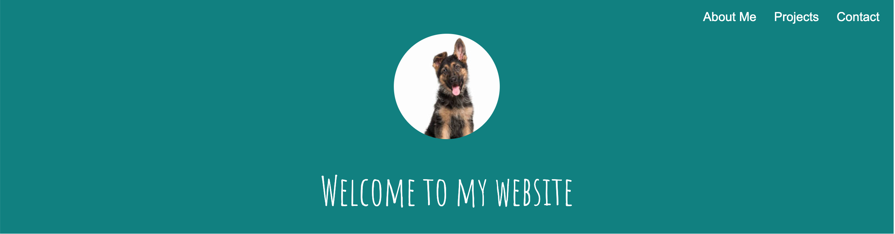
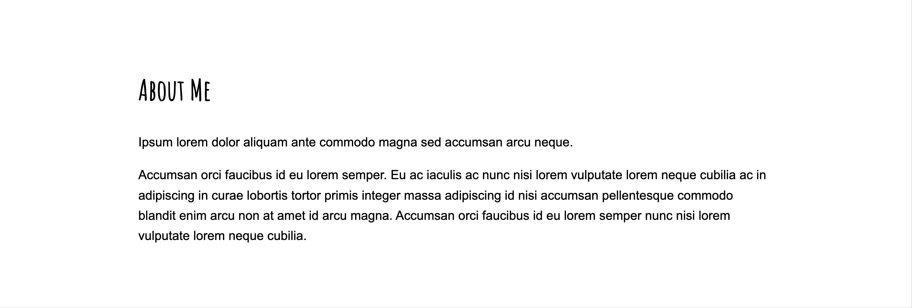
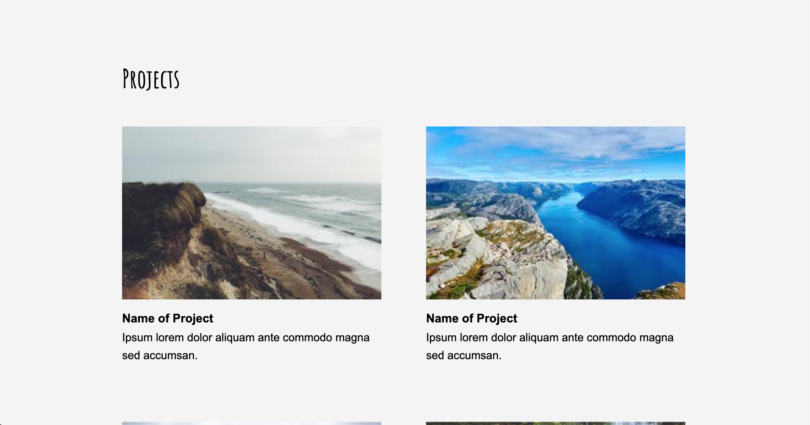
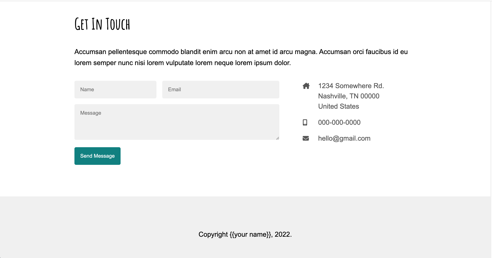
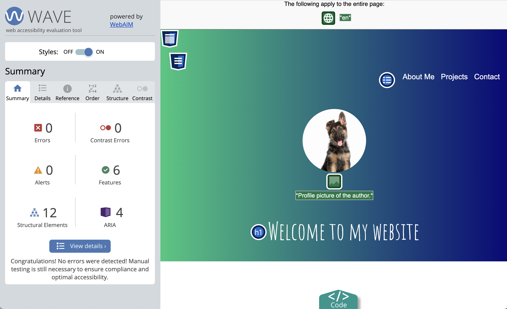

Assignments > HW5: Make a fake portfolio website
Due on Fri, 03/03 @ 11:59PM. 25 Points.
Introduction
The goal of HW5 is to:
- Style a fake portfolio template to resemble the one in the animation shown below, and
- Make some design choices that better suit your own preferences and aesthetic sensibilities.
- Make it accessible to screen readers and web crawlers.
I have given you an index.html file with some “canned” content.
Your job is to style this content by making changes to the styles.css file that you are given. When you’re done, your webpage
should look like the one shown in this
video – but your colors, fonts, icons, etc. should reflect your own choices.
General Guidelines
- This exercise is primarily a CSS exercise that encourages you to practice what you have learned about the box model, flex, and CSS grid to instantiate some good rules of composition. Most of your required edits will be within the
styles.cssfile (except for the navigation link edits, which must be done inindex.html).- You are also welcome (but not required) to change the actual content of the portfolio in
index.htmlfile. For instance:
- You can add additional class names or ids to make things easier for you to style, or
- You can add additional images, icons, content, etc. to make the page look more like an actual portfolio of your work.
- You can choose any fonts and colors that you want.
- If you take your own liberties in terms of the design, just ensure that your site is accessible in terms of color contrast, and that you are following the rules of composition discussed in class.
Your Tasks
Please download the starter hw05 files and save them inside of
your csci185/homework folder:
Then, complete the 8 sets of tasks described below. Read the checklist carefully, to ensure that you receive full credit for this assignment.
- Navigation (2 pts)
- Header (2 pts)
- About Me (1 pt)
- Projects (3 pts)
- Contact (5 pts)
- Footer (1 pt)
- Responsive Design (4 pts)
- Accessibility Features (5 pts)
- Publish to GitHub (2 pts)
1. Navigation [2 pts]
Style the <nav></nav> section so that it matches the
style of the screenshot below. Specifically, you will:
- Style the
<ul></ul>so that it displays horizontally and aligned to the right, with the bullets removed. - Ensure that you customize the color of the links (
atags) and that you remove the default underline style.- Feel free to choose a color other than white.
- Modify the link’s
hrefattribute (within theindex.htmlfile) so that when each link is clicked, the page scrolls down to the relevant section (see video).- Hint: See this W3Schools sample.

2. Header [2 pts]
Style the <header></header> section so that it matches
the style of the screenshot above. Specifically, you will:
- Change the background color to a color that you like (but ensure that there is sufficient contrast with the text, so that the text is readable).
- Center the text and image.
- Style the image so that it’s circular (hint: Google “border radius”).
- Use a custom Google font to style the
<h1></h1>tag, and change the color to white (or another color that you prefer).
3. About Me [1 pt]
Style the <section id="about"></section> section so
that it matches the style of the screenshot below. Specifically, you will:
- Use a custom google font for the
<h2></h2>tag (same font you used for the h1 tag). - Use a simple font for the rest of your text tags (e.g., p, li, a, etc.) – something that is well-suited for body copy.
- Ensure that the text has sufficient spacing from the sides of the screen and from the top and bottom, and that it is left-justified (see screenshot).

4. Projects [3 pts]
Style the <section id="projects"></section> section so
that it matches the layout of the screenshot below. Specifically, you will:
- Arrange your project “cards” into two columns.
- Ensure that there is adequate spacing between the cards (remember the principle of alignment).
- Change the background of the entire section to light gray.
- Ensure that the cards have sufficient spacing from the sides of the parent container.

5. Contact [5 pts]
Style the <section id="contact"></section> section so
that it matches the style of the screenshot below. Specifically, you will:
- Arrange the screen into two columns, where the left column displays the form and the right column displays the author’s contact information.
- Arrange the form textboxes and button as shown in the screenshot.
- Ensure that the textboxes have a light gray background and some padding and marging (as shown in the screenshot).
- Ensure that the form and contact info have sufficient spacing from the sides of the parent container.

6. Footer [1 pt]
Style the <footer></footer> section so that it matches
the style of the screenshot above, with center-aligned text and a light gray background color.
7. Responsive Design [4 pts]
Make a media query for screen dimensions where the width of the screen falls below 800px. Within this media query, implement the following style rules:
- The navigation menu should be centered (versus right justified).
- Each of the project cards should be in its own column (versus the two-column desktop display).
- In the “Get In Touch” section, the contact info should be displayed below the contact form (instead of to the right of it).
See the animation shown below:

8. Accessibility Features [5 pts]
- Install the WAVE Browser Extension using either Firefox or Chrome, and use it to generate an accessibility report.
- Correct all of the accessibility errors by modifying the
index.htmlfile.- You will need
alttext for all images - You will need to add
aria-labelattributes to all form controls. See this article, Approach #2. - You will need to “teach” your web browser what language your HTML file is written in (English? Japanese? German?).
- You will need
- Take a screenshot of your final accessibility report (Sarah’s report is shown below) and save it in
your
hw05folder. - Answer the following questions in the
accessibility-answers.txtfile provided:- What corrections did you have to make?
- Do you think your website is usable if you turn off the CSS? Why or why not?
- Is your site is tabbable? In other words, without the use of the mouse, are all the links and buttons accessible using the tab key?

9. Publish to GitHub [2 pts]
- On your homepage, create a new entry for Homework 5 with links to the following pages:
- A link to the
index.html(your actual portfolio). - A link to the screenshot of your Wave report.
- A link to the answers to your accessibility questions.
- A link to the
- Commit and sync all of your changes to GitHub.
- Wait 5 minutes and verify that your GitHub pages link works.
Rubric
Please double-check that you have completed all of the tasks before submitting:
| Task | Points | Description | |
|---|---|---|---|
| 1. | Navigation | 2pts | see requirements |
| 2. | Header | 2pts | see requirements |
| 3. | About Me | 1pts | see requirements |
| 4. | Projects | 3pts | see requirements |
| 5. | Contact | 5pts | see requirements |
| 6. | Footer | 1pt | see requirements |
| 7. | Responsive Design | 4pts | see requirements |
| 8. | Accessibility Features | 5pts | see requirements |
| 9. | Publish to GitHub | 2pts | see requirements |
| Total | 20pts |
What to Submit
- A link to your homepage on GitHub pages, which should link to your
hw05assignment (and previous tutorials and classwork you have done). - A link to your GitHub code repository (where your code files are stored).